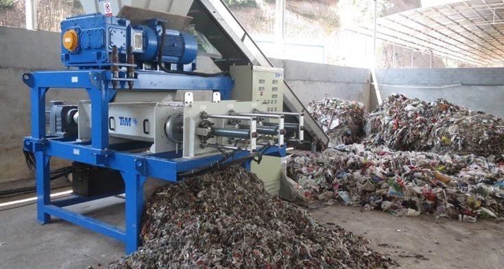

Shredder Sampah
Shredder adalah alat yang dirancang untuk menghancurkan material sampah menjadi potongan kecil-kecil dengan menggunakan bilah tajam yang berputar. Alat ini sering digunakan untuk memproses berbagai jenis sampah, termasuk plastik, organik, kertas, dan bahkan logam ringan, tergantung pada jenis shredder yang digunakan. Dengan ukurannya yang lebih kecil setelah dihancurkan, sampah menjadi lebih mudah untuk diolah lebih lanjut, seperti dalam proses daur ulang atau pembuatan kompos.